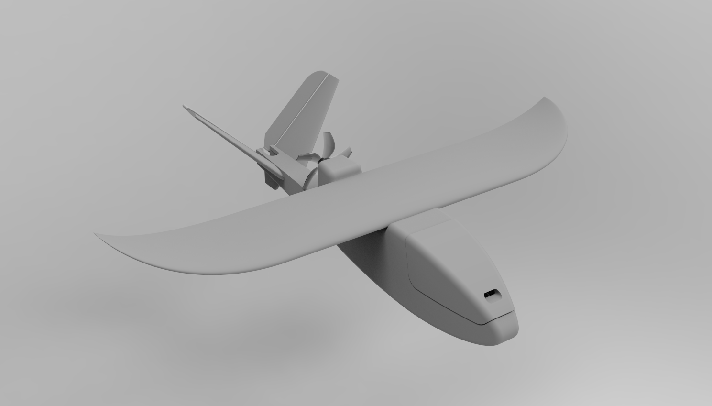
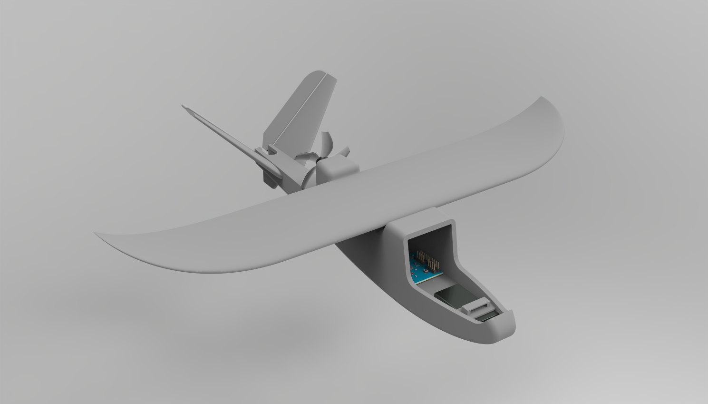
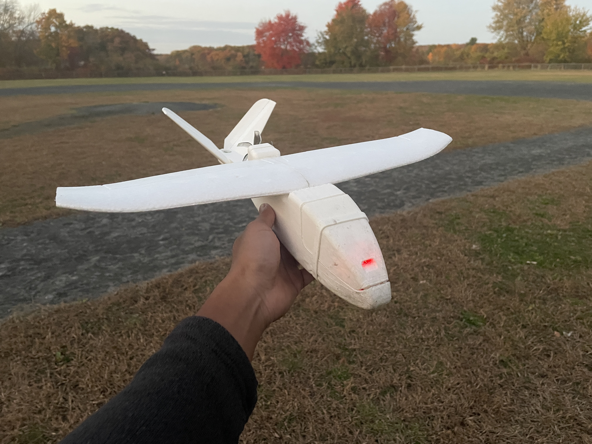

The new flight controller works on the bench, but it doesn’t fit the avionics bay of Foamfly, the existing F405-kitted airframe. Foamfly is a working article I’m not willing to cannibalize for parts or space, so this variant gets its own model: a second airframe with an enlarged avionics bay sized for the Pilot-3, its wiring, and the telemetry stack. Continuing with the general theme of eliminating “black boxes”, I’m dubbing this model Glass Box.
So, does it all work? Yes, with caveats.
On the bench, the dashboard’s live telemetry and tunable leveler parameters, throttle response, IMU attitude readouts, transmitter stick response, the ruddervator control mix, and attitude corrections all behaved as designed. The GPS reliably acquires and holds a fix on multiple satellites (28 on one occasion), and agrees with a known reference position. The barometer reads correctly on the bench, but it’s uncalibrated and not yet used in the control logic.
In flight, attitude corrections are directionally validated: the stabilizer pushes the aircraft the right way, though the loop isn’t tuned yet. No brownouts or RC link losses were observed across flights.
Every sortie thus far has been highly oscillatory, indicating a need for further tuning in the control gains, IMU filtering, and aerodynamics (Glass Box has similar, but not identical, datums to Foamfly). What’s left to chase is reliability and performance, not core function.
